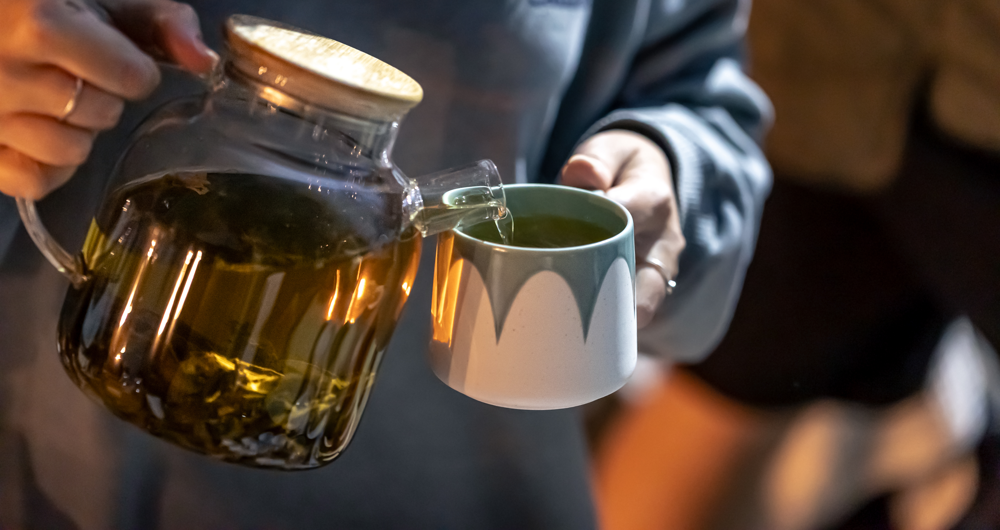

1. Morning Mindfulness
Begin your day by preparing your favourite tea without rushing. Notice the warmth of the cup, the aroma of the leaves, and the flavour of each sip before starting your daily tasks.
Tea rituals have been part of cultures around the world for centuries. Learn how simple moments can bring balance and calm to your day.

Tea is more than a drink. For many people, it is a moment to slow down, reconnect with themselves, and appreciate the present. From preparing the leaves to enjoying the first sip, every step can become a meaningful part of the day.
Across the world, tea has inspired traditions that celebrate hospitality, mindfulness, friendship, and reflection. Japanese tea ceremonies focus on mindfulness and careful preparation, while British afternoon tea brings people together through conversation and shared treats.
You do not need a special setting or expensive equipment to create your own tea ritual. A favourite cup, fresh water, and a few quiet minutes can be enough to make an ordinary moment feel special.
Begin your day by preparing your favourite tea without rushing. Notice the warmth of the cup, the aroma of the leaves, and the flavour of each sip before starting your daily tasks.
Take a short break during a busy afternoon. Put away distractions, make a fresh cup of tea, and give yourself a few minutes to rest and gather your thoughts.
Create a calming evening routine with a caffeine-free herbal infusion, such as chamomile or peppermint. Enjoy your drink in a comfortable, peaceful setting.
Invite a friend or family member to share a pot of tea. Use the time to talk, listen, and enjoy each other's company without distractions.
Try a different tea variety each week. Explore green, black, white, oolong, and herbal infusions to discover new aromas and flavours.
Pay attention to the small details, from heating the water to watching the leaves unfurl. Let the brewing process remind you to enjoy life's quieter moments.
The beauty of a tea ritual is that it can be personal. You might enjoy a quiet cup before work, prepare a pot for friends on the weekend, or end the day with a soothing herbal infusion.
There is no single right way to enjoy tea. Choose the flavours you love, take your time with the preparation, and make space for moments that help you feel refreshed.
Discover your favourite teas and bring a little more intention to your everyday routine with INFUSION.
Back to Blog Explore Our Tea Collection